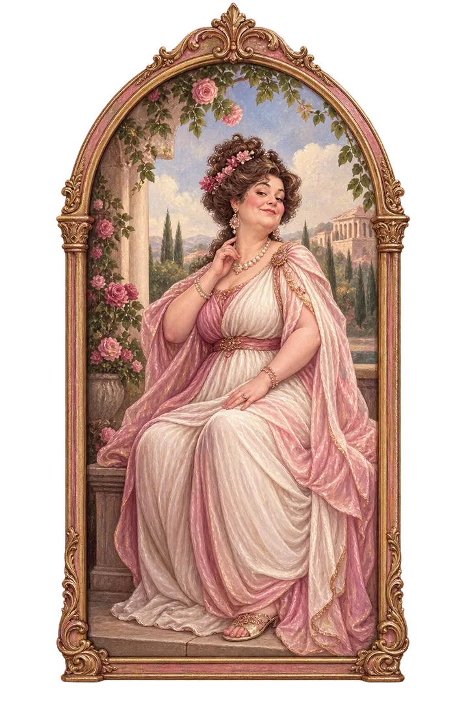

Zpět ke schodům Východní chodbaSeverní chodba
U stěny zůstala zapomenutá studentská taška. Mezi portréty je jeden, který střeží cestu dál. Chodba pokračuje k východnímu křídlu.

Zpět ke schodům Východní chodbaU stěny zůstala zapomenutá studentská taška. Mezi portréty je jeden, který střeží cestu dál. Chodba pokračuje k východnímu křídlu.